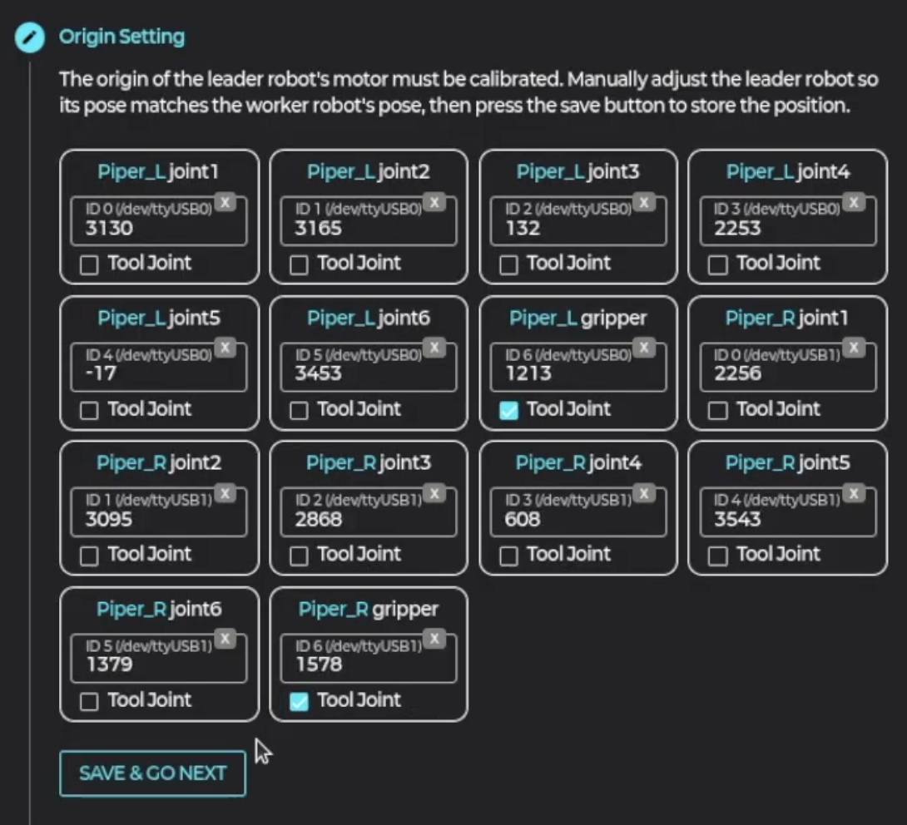
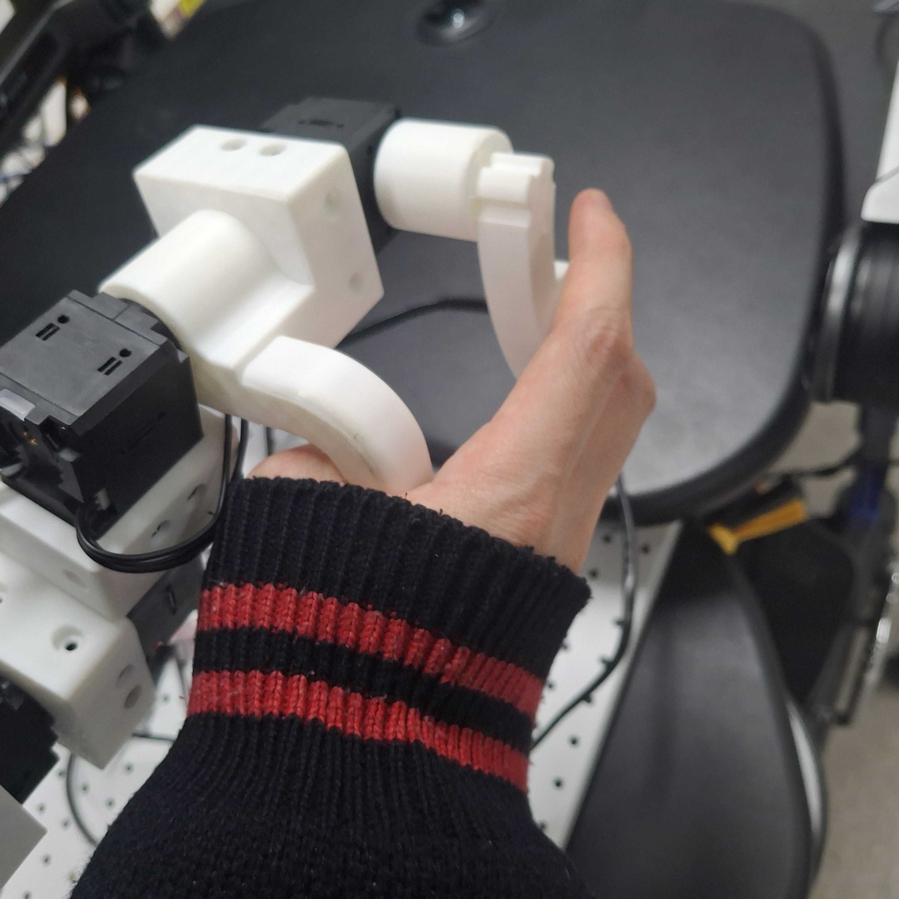
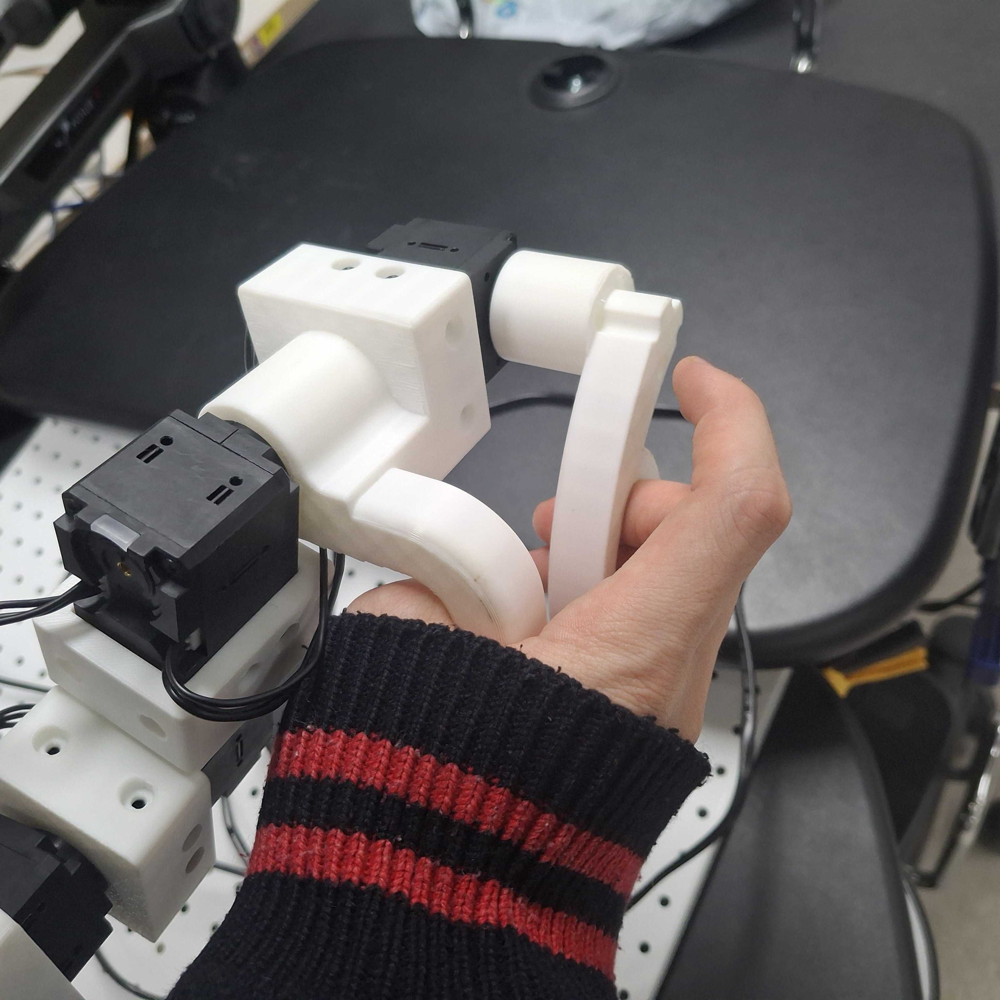
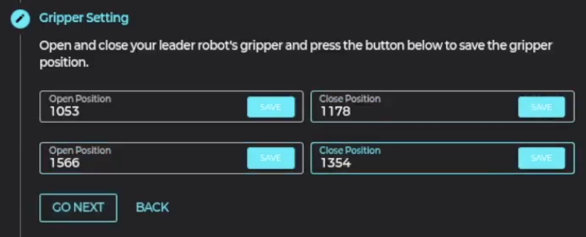

6 Teleoperation
텔레오퍼레이션 설정 및 실행 방법을 안내합니다.
⚙️ 텔레오퍼레이션 설정
-
1. 설정 시작
어셈블리 페이지에서 어셈블리를 우클릭한 후 "Teleoperation Setting" 버튼을 클릭합니다.
-
2. 리더 로봇 시작
"Start Leader Robot" 버튼을 클릭합니다.
📍 Step 1. 원점 캘리브레이션
1. Joint 매칭
우측에 리더 로봇의 다이나믹셀 모터값들이 나타나면, 드래그 & 드랍으로 매칭되는 Joint 번호에 배치합니다.
이때, 조인트가 Tool일 경우 Tool 체크박스를 체크합니다.
리더 로봇을 작업 로봇의 원점과 동일하게 배치한 후 "Save & Go Next" 버튼을 클릭합니다.
✋ Step 2. 그리퍼 캘리브레이션
-
5. 그리퍼 열림 상태 저장

리더 로봇 그리퍼를 벌린 상태에서 첫 번째 값을 저장합니다.
-
6. 그리퍼 닫힘 상태 저장
 
리더 로봇 그리퍼를 닫은 상태에서 두 번째 값을 저장합니다.
🔄 Step 3. 조인트 방향 설정
텔레오퍼레이션을 직접 해보면서 반대로 움직이는 조인트 번호를 체크합니다.


🎚️ Step 4. 부드러움 설정
EMA 계수 설정을 통해 로봇이 리더 로봇을 따라 보다 부드럽게 움직이도록 설정합니다.

▶️ 텔레오퍼레이션 실행
-
1. 초기화
텔레오퍼레이션 실행 시, 리더 로봇에 토크가 걸리며 작업 로봇과 동일한 포즈로 이동합니다. -
2. 조종 시작
포즈를 맞춘 상태에서 그리퍼를 닫으면 리더 로봇에 토크가 풀리며 로봇을 조종할 수 있습니다. -
3. 정지
그리퍼를 일정 각도 이상으로 벌리면, 리더 로봇에 토크가 걸리며 그 자리에서 정지합니다.
처음에는 천천히 움직이면서 로봇의 반응을 확인하세요. 캘리브레이션이 정확할수록 조작이 편리합니다.